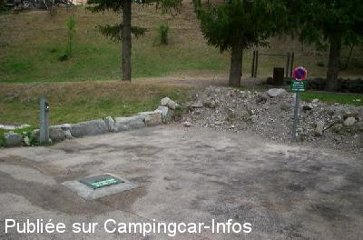

ACS = Aire de services sur camping acceptant le passage pour les services de :
SAINT ETIENNE DE TINÉE
(N° 416)
Accès/adresse :
Cartel D139
Camping du Plan d'Eau
06660 SAINT ETIENNE DE TINÉE
Camping du Plan d'Eau
06660 SAINT ETIENNE DE TINÉE
Latitude : (Nord) 44.25823° Décimaux ou 44° 15′ 29′′
Longitude : (Est) 6.92358° Décimaux ou 6° 55′ 24′′
Tarif : 2015
Stationnement, C-C, 2 personnes : 7 €
Personne + 7 ans : 3 €
Enfant - 7 ans : 2 €
Électricité 13 A : 2,50 €
Taxe de séjour : 0,20 €
Animal : 0,80 €
Lave-linge : 2,50 €
Services C-C de passage : 3 €
Type de borne : Plateforme
Services :


Commerces à proximité
Proche de la maison du parc au bord du lac
Autres informations :
Ouvert du 01/06 au 30/09
Tel Office de Tourisme : +33(0)493 024 196
http://campingduplandeau.com/

Le 03/08/2005 par cdomicol
de
Coletgil
le 15/06/2014 :
La réservation est vraiment utile, compte tenu du nombre de places limité et du peu d'aires dans la vallée de la Tinée.
Accès aux sanitaires du camping (un peu loin, mais très fonctionnels et très propres), toilettes à proximité.
L'acceuil est hyper sympa. Nombreuses randos au départ de St Etienne, le "topo-guide" de la région nous a été offert.
La réservation est vraiment utile, compte tenu du nombre de places limité et du peu d'aires dans la vallée de la Tinée.
Accès aux sanitaires du camping (un peu loin, mais très fonctionnels et très propres), toilettes à proximité.
L'acceuil est hyper sympa. Nombreuses randos au départ de St Etienne, le "topo-guide" de la région nous a été offert.
de
laurent
le 26/08/2013 :
Très bien! pensez à réserver avant et profitez du plan d'eau, des douches et du lave-linge.
Accueil au top!
Très bien! pensez à réserver avant et profitez du plan d'eau, des douches et du lave-linge.
Accueil au top!
de
Pierre
le 16/10/2011 :
De passage le 04.10 le camping était fermée mais l'aire de stationnement reste accessible sans service. Aire parfaite.
De passage le 04.10 le camping était fermée mais l'aire de stationnement reste accessible sans service. Aire parfaite.
de
Jean-Claude 89
le 19/10/2009 :
Aire de services et parking pour 6 CC seulement, situés juste avant l'entrée du camping, ce dernier étant interdit aux véhicules et n'acceptant que les tentes. Bloc sanitaire très propre, lave-linge, plan d'eau avec baignade, torrent, très bon accueil. Très bien !
Aire de services et parking pour 6 CC seulement, situés juste avant l'entrée du camping, ce dernier étant interdit aux véhicules et n'acceptant que les tentes. Bloc sanitaire très propre, lave-linge, plan d'eau avec baignade, torrent, très bon accueil. Très bien !